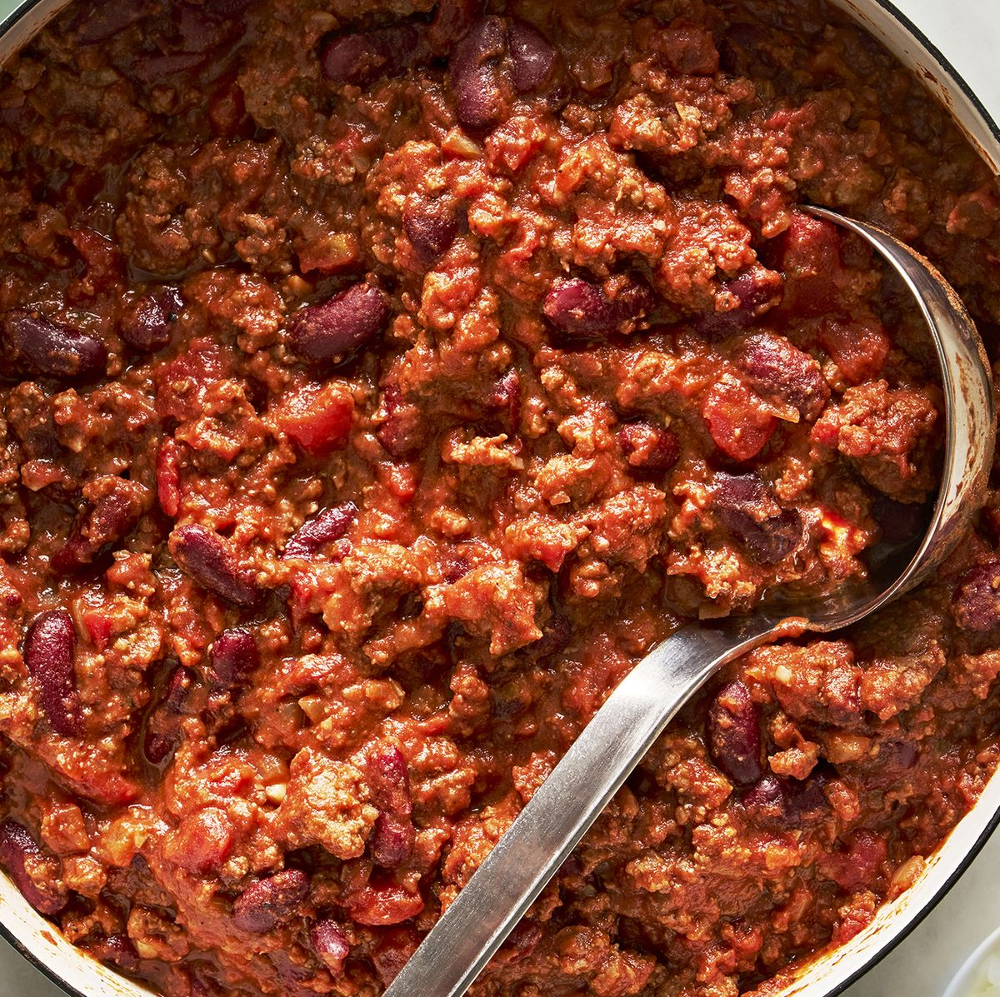

Chili

Description
Traditionally, chili combines ground or coarse-chopped beef (or other meat), dried red chili powder, onion, garlic, some liquid, and sometimes comino, oregano, beef suet, tomato, and masa (finely ground corn meal) to thicken. Texas-style chili has no beans. Southerners and Midwesterners generally add beans. This classic chili is perfect for a weeknight meal because it can be made in minutes. The only thing to chop is an onion.
Ingredients
- Ground Beef
- Beef Broth
- Kidney Beans
- Tomatoes
- Tomato Sauce
- Onion
- Chili Powder
- Cumin
- Tomato Paste
- Salt
- Pepper
- Sugar
- Garlic Powder
- Cayenne Pepper (optional)
Steps
- Heat olive oil in a large soup pot.
- Add chopped onion and cook for 5 minutes.
- Add ground beef and break it apart with a wooden spoon.
- Cook for 6-7 minutes.
- Add chili powder, cumin, sugar, tomato paste, garlic powder, salt, pepper, and optional cayenne.
- Stir until well combined.
- Add diced tomatoes, kidney beans, beef broth, and tomato sauce.
- Stir well.
- Simmer for 20-25 minutes.
- Let the chili rest for 5-10 minutes before serving.